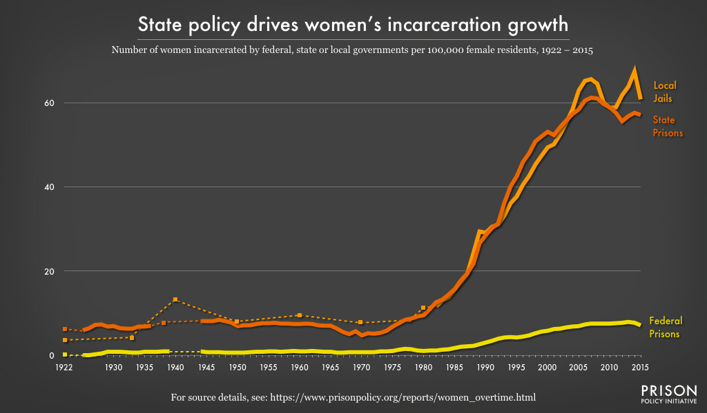
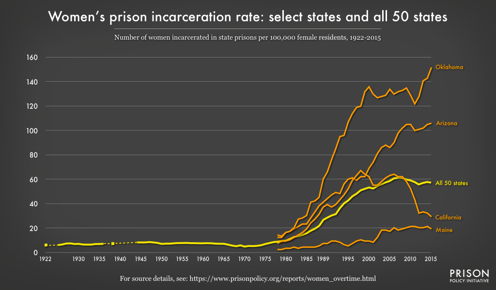
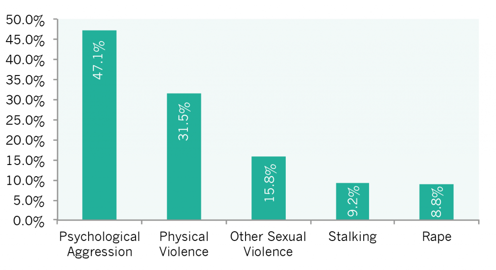

Client Research
Nullam posuere erat vel placerat rutrum. Praesent ac consectetur dui, et congue quam. Donec aliquam lacinia condimentum.
Primary Research
Image
Fit


Image
Fit


Secondary Research
Explore the most recent news in your client's field.
There are currently more than 741,000 women in prison worldwide. The past two decades have seen the global female prison population grow at an alarming rate. The number of women in prison is estimated to have increased by about 59% between 2000 and 2020.
There are people fighting for prisons to accommodate women better. Orange is The New Black is a television show that brought the struggles of women in prison to light. Rules of prison, clothing provided, access to female hygiene, and privacy are all issues being brought to the world's attention. There are also fewer programming options, such as education, job training and 12-step programs.
The Violence Against Women Act was created in 1994, however a restoration act was just co-introduced by Thom Tills (the U.S Senator for North Carolina) to reauthorize VAWA through 2027, preserve advancements made in previous reauthorizations, and include a number of additional improvements to the current law.
Addiction among women shows up often in pop culture, but most recently it is portrayed in the show Euphoria. Zendeya plays Rue, a character who has been struggling with addiction and substance abuse since she was 13.
A recent study has shown that 19.5 million females (or 15.4 percent) ages 18 or older have used illicit drugs in the past year and that women often use substances differently than men, such as using smaller amounts of certain drugs for less time before they become addicted.
Try to find recent innovations in your client's particular area. They could be technological, behavioral, or cultural.
ConConnect is a professional networking platform, founded by Andre Peart that helps the formerly incarcerated with employment. ConConnect is similar to the popular professional networking platform Indeed, but works specifically with those who are ex-convicts.
The National Domestic Violence Hotline has updated their website and has made it very easy to navigate for those dealing with abuse. In addition, the national suicide hotline has been updated to three simple letters of 988, which could be beneficial to women who feel like they have no other choice in an abusive relationship.
The University of Southern California is opening a bar that is also a lab to study the long term and short term effects of alcohol, as well as alcohol addiction and abuse.
Take a look at other solutions in your area. Which ones worked? Which ones didn’t?
www.wpaonline.orgThis website incorporates some of the same colors as mine does, it is also similar in layout to my original website for YCDC. However, it is specifically for women dealing with incarceration.
www.womensagisntabuse.orgA little busy, but gets their point across. Uses the purples and blues as the other sites I have looked at.
www.thehotline.orgSimple, clean, effective, easy to navigate.
www.womensforsobriety.orgPurples and blues show up on this website too, they incorporate some CSS aspects that I would like to incorporate into my own website redesign.
www.statusofwomendata.orgGreat site for coloring and style.
Is there any market data that you can dig up that may be relevant in helping you solve the design challenge?


